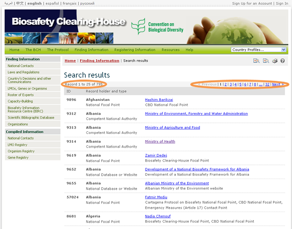
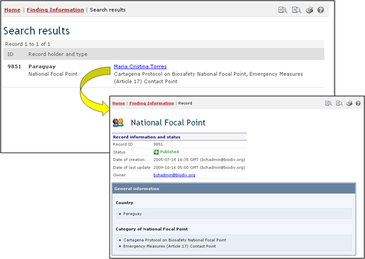
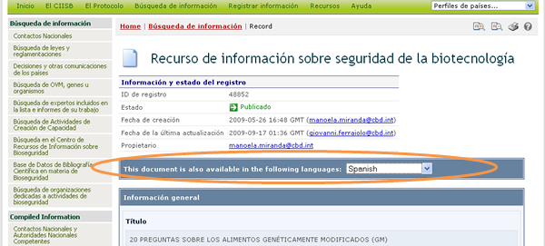
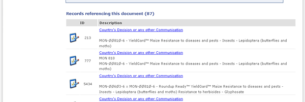

Al hacer clic en el botón Realizar la búsqueda se mostrará la página de resultados, en la cual encontrará una lista con todos los registros que coincidan con los criterios de búsqueda ingresados. El encabezamiento de la lista muestra la cantidad de registros encontrados y proporciona enlaces para navegar entre las páginas de la lista de resultados.

Para algunas categorías de información hay funciones adicionales para manejar los resultados de la búsqueda. Éstas se explican en la sección correspondiente a cada categoría de información.
Cada registro que aparece contiene un enlace (que puede ser sobre la ID del registro o sobre su nombre, dependiendo del tipo de registro) que muestra los detalles del registro al hacer clic sobre él.

Si el registro se encuentra disponible en más de un idioma, se muestra una barra que permite al usuario ver la información del registro en cualquiera de los idiomas disponibles.

Si algún registro de la base de datos hace referencia al que se está mostrando, entonces aparecerá una sección llamada “Registros que refieren a este documento” en la parte inferior de la página. Esta sección proporciona enlaces directos a todos los registros que refieran al actual.
